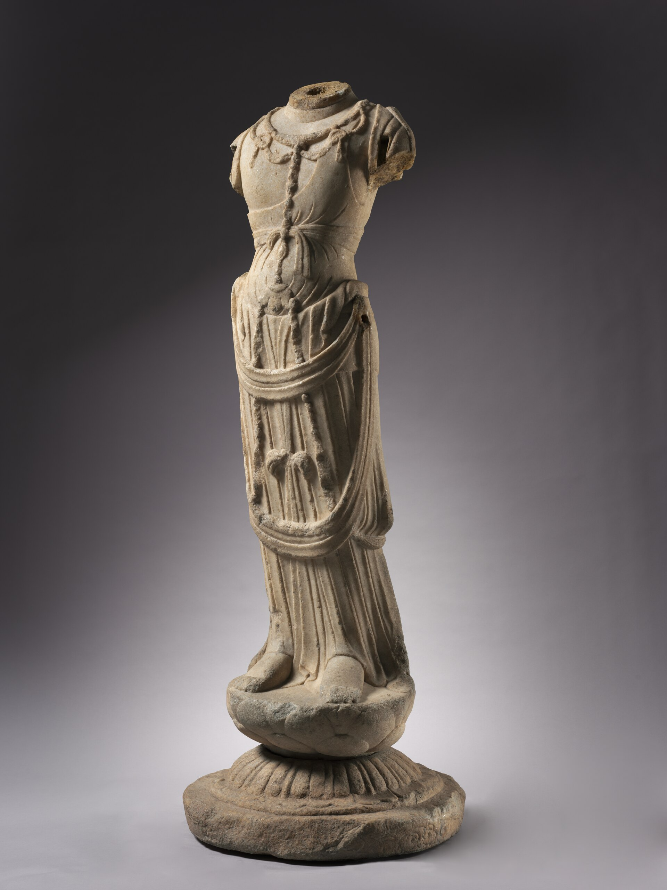
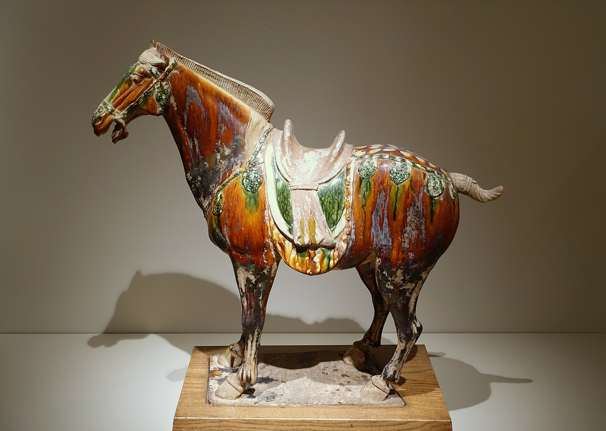
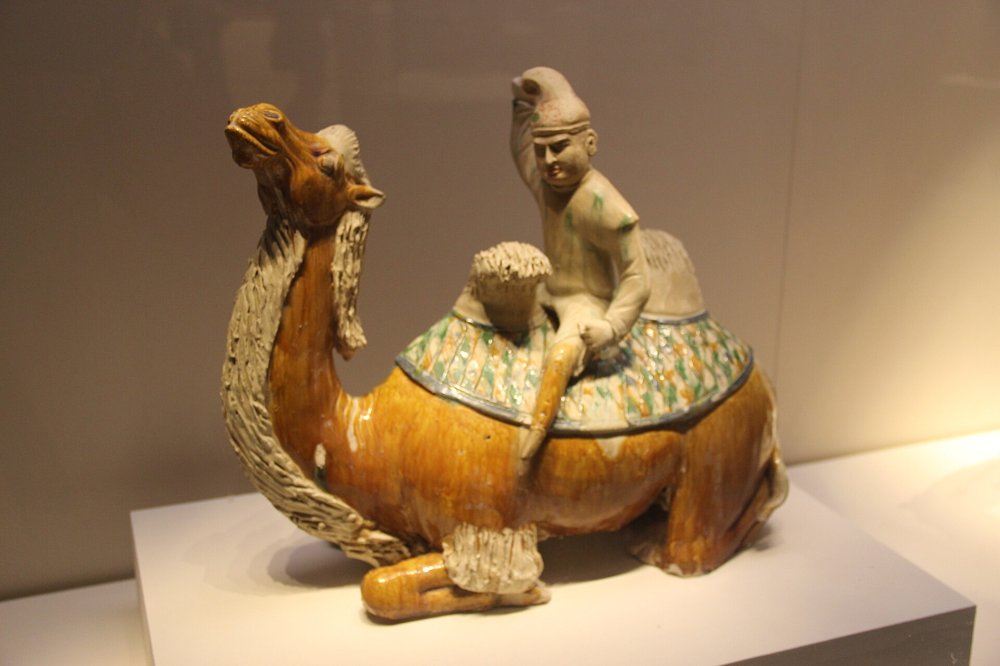
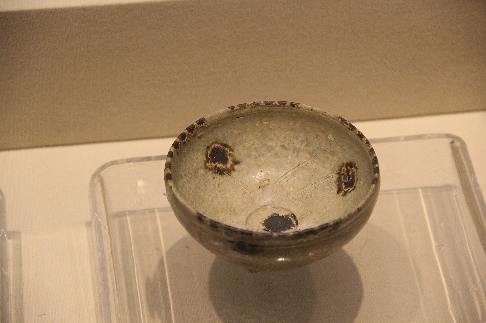
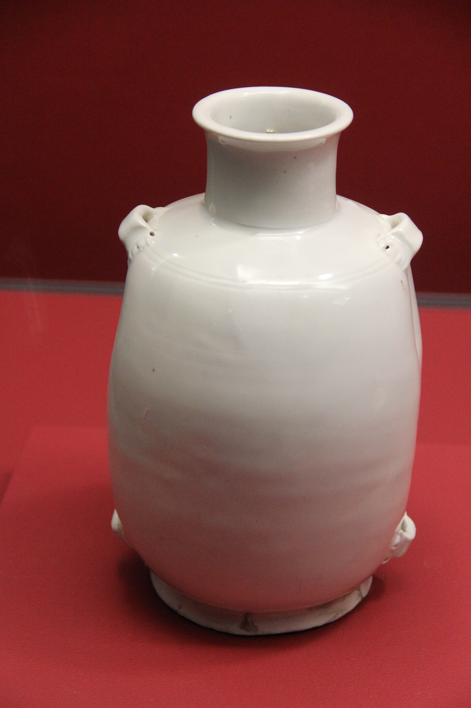

618
Founding
Li Yuan took the throne as Emperor Gaozu in 618, inheriting the administrative machinery the short-lived Sui had built and the canals they had dug. Early Tang art is still visibly continuous with Sui and Northern Dynasties work: stiffer figures, thinner glazes, a Buddhist sculptural idiom inherited rather than reinvented. What changed first was reach, not style.
No Tang object in this collection dates from the founding decade. The record of early Tang art here is a written one.
626
Taizong and the opening of the routes
Under Taizong the Tang broke the Eastern Turkic confederation and took control of the oasis city-states of the Tarim Basin. Chang'an became the eastern terminus of a genuinely continuous overland trade system. Foreign goods, foreign musicians, and foreign religions arrived together, and Tang artists began depicting the people who brought them.
690
Wu Zetian
Wu Zetian ruled in her own name as emperor, the only woman in Chinese history to do so, and used monumental Buddhist patronage as an instrument of legitimacy. The colossal sculptures at Longmen belong to this program. Ceramic figures grow fuller, more confident, and more theatrical in the same decades.

713
The Xuanzong court
The first decades of Xuanzong's long reign are the period later writers meant by the Tang golden age. Sancai glazing reaches its most ambitious scale, tomb assemblages become crowded portrait galleries of camels, grooms, horses, and foreign merchants, and the court sustains an unmatched concentration of poets and musicians. The confidence is legible in the objects: they are made to be looked at.


755
The An Lushan rebellion
An Lushan's revolt drove the emperor from Chang'an and began eight years of war that the dynasty survived without ever recovering. Census records collapse; the Tarim garrisons are abandoned; overland trade contracts sharply.
The rebellion is the hinge of this site because it is legible in the art itself. Large sancai tomb assemblages effectively stop, and the poetry written after it sounds nothing like the poetry written before.
780
After the war
The late Tang state governed a smaller effective territory through negotiated accommodation with regional military governors. Patronage moved outward from the capital and downward in scale. Ceramics turn toward monochrome refinement — Yue celadon, Xing white ware — and away from polychrome display, a shift that leads directly to Song taste.


907
End
The last Tang emperor was deposed in 907 and the empire fragmented into the Five Dynasties and Ten Kingdoms. The dynasty's reputation, however, was largely built afterward, by writers looking back at the Xuanzong decades across the break of 755. Much of what we call Tang art is read through that nostalgia.